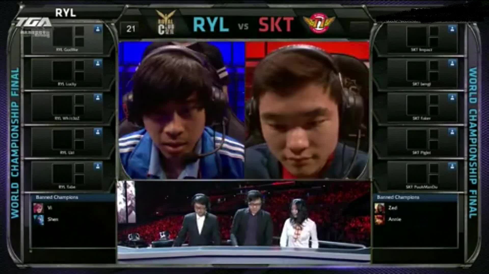

| s3的五五开 | 返回主页 |
|---|---|
在s3世界赛上，皇族一路过关斩将，打败了fnatic，进入总决赛与skt相遇。 或许广为人知的是卢本伟说的那句话“我和faker五五开吧，我对线也经常单杀他的”，五五开这个名字也因此而来。s3打完，white就此在巅峰时期退出电竞圈，进入直播界。那么在2013年，那场比赛以及比赛后续到底发生了什么呢。 在赛前，皇族和skt打训练赛，卢本伟在面对采访是说到，“其实我跟他训练赛打得蛮多的，训练赛里面他老是打不赢我，我不知道他是放水还是为什么，所以就期待一下决赛我能把他单杀吧。”“啊，我觉得他不如我，因为我是在线上，每一局都把他打得很惨，就我拿发条那两局他是完全对不了线”。 但是当比赛到来之时，皇族被skt3比0带走。 比赛虽然是输了，但卢本伟当时真的不如faker吗？ 其实这个判断也不能说一定是对的。回顾比赛，卢本伟在线上有时还真能取得一定优势，补刀也不怎么落下。其实是整个团队运营的问题，在战术思维层面完全不是一个档次，当时打野的lucky也有很大问题。 万众期待的全华班进入决赛却是这样的一个结果。卢本伟帮助lpl拿下一个难得的亚军，回国后，等待他的不是鲜花和掌声，而是滔天的谩骂，这成为卢本伟退役的重要原因。他也曾多次在直播间说到，拿了个世界亚军回来一直被骂，甚至过了一个月还在骂。他已经无心打职业。有一部分原因是对电竞圈的失望，也有一部分原因是后来一心想去搞直播，一心想赚钱。 s3的事情早在多年前就已经尘埃落定了，S3时候的皇族战队夺得了S3世界亚军，也是LPL离S系列赛最近的一次，尽管皇族战队最终没有获得冠军，但他们在赛场上的精彩表现让人难以忘怀。特别是在与SKT战队的比赛中，皇族虽然惜败，但他们展现出了顽强的斗志和团队配合能力。 其实S3赛季对于皇族战队来说具有特殊意义。他们打破了中国赛区长期以来在国际舞台上的不佳记录，为中国电竞争得了荣耀。尽管当时并没有受到足够的欢迎和鼓励，但他们也一直在追求这自己的目标。 而未曾想到，这s3的亚军会成为lpl全华班进十年最好的成绩。 |
 |